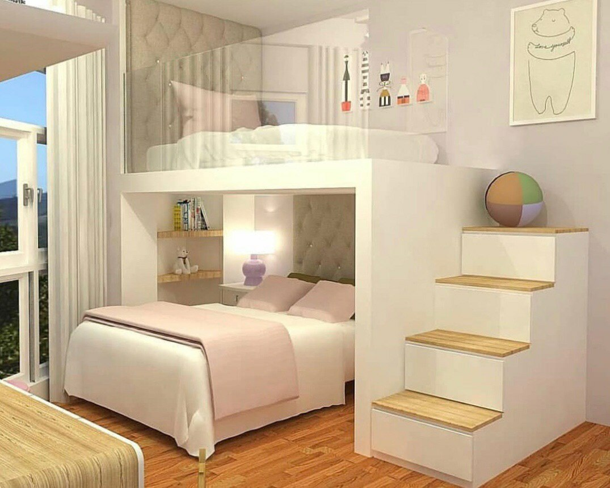

Дети - короли своего королевства и оно называется Детство!
kids-wow
ДИЗАЙН ДЕТСКОЙ КОМНАТЫ: ЦВЕТОВАЯ ГАММА
Вы наверняка знаете, что цветовая гамма для детской очень важна. Ведь
той или иной цвет может по-разному влиять на настроение ребёнка: какой-то
будет успокаивать и вдохновлять, а какой-то делать его капризным.
Считается, что яркие цвета, к примеру, красный, могут сделать ребёнка более
раздражительным. Поэтому рекомендуется оформлять комнату в спокойных, светлых
тонах: бежевом, голубом, оливковом. Эти цвета помогут ребёнку
расслабиться и отдохнуть после тяжелого дня в школе или садике.
Но повторимся, все зависит от предпочтения вашего малыша.
